The Arduino Sidekick Basic Kit is designed to be used with your Arduino / Seeeduino / Seeeduino ADK / Maple Lilypad or any MCU board. It contains everything needed for a first-time user to connect his/her computer to an Arduino. It includes many of the most popular accessories for DIY projects : like Breadboard, Jumper wires, Color LEDs, Resistors, Buzzer, etc. All of these coming with its own handy box are easy transport and minimal clutter.
Model: KIT22434P
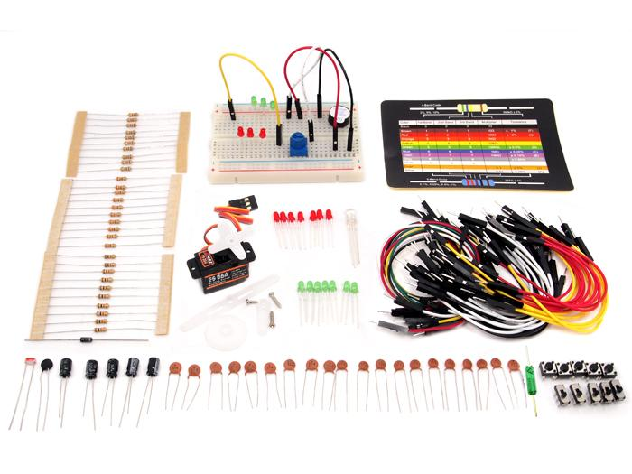
Current is the rate of flowing electric charge in a conductor. Voltage is the potential difference (electric driving force) applied between two points to conduct current. Current is expressed in terms of Amperes (A) and Voltage is in terms of Volts (V).
Resistors are obstacles of the flowing current in a conductor. They are used to limit the flow of current to an electronic device like lamp. The resistance to the flowing current is expressed in Ohms (Ω).They are divided into Fixed resistor and variable resistor (POT) .
Resistors can be connected in two different types: In parallel or in series with each other.
When the resistors are connected in series, the total equivalent resistance will be equal to the sum of all the values of resistors in series.
In parallel, the reciprocal of the total equivalent resistance is equal to the sum of each resistor's reciprocal.
The relations among Current, Voltage and Resistance are governed by Ohm's Law - which states that "The current through a conductor (I Amperes) between two points is directly proportional to the potential difference or voltage across the two points (V Volts), and inversely proportional to the resistance between them (R Ohms)" i.e I = V / R. Hence V = IR or R = V / I. The following Ohm's Law triangle can be used to remember the relationship between V, I and R. The vertical line indicates multiplication operation and horizontal line indicates division operation.
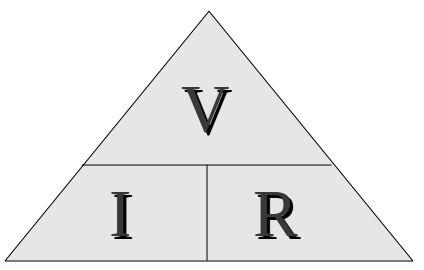
eg: Hence to know current I, we divide V by R.
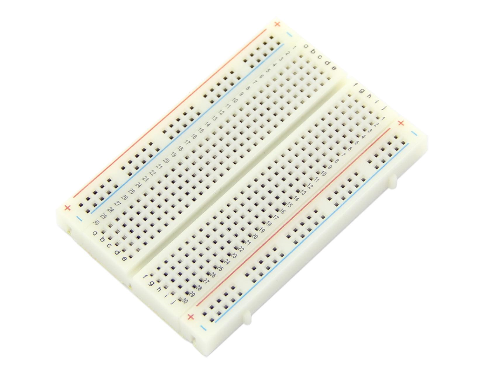
Breadboard is a prototyping device for electronic circuits. It is very useful to connect electronic components and to make a circuit without soldering. Breadboard consists of rows and columns of holes with metal contacts to insert components. The breadboard supplied with Arduino Sidekick Basic Kit is arranged of 2 X 30 five-hole columns and 4 X twenty five-hole rows. These holes are connected internally in a manner as illustrated below.
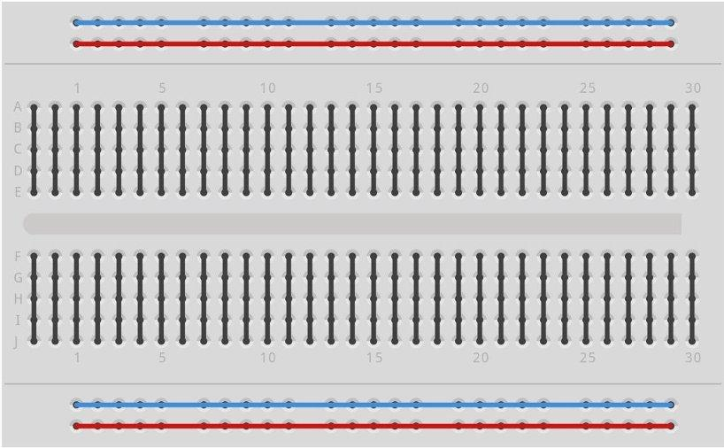
The resistors supplied with Basic Kit are made of carbon and have fixed value type. The value of resistance is marked by the colored bands. You can get the value from the resistor color code sheet.
POT is a variable resistor whose resistance can be changed by rotating the knob. It has three terminals - the terminals on the ambilateral sides of the resistor are connected to ends of conductor which is made of resistive material. The middle terminal is connected to a slider which moves over the resistive material. The value of resistance changes proportionally to the position of the knob.
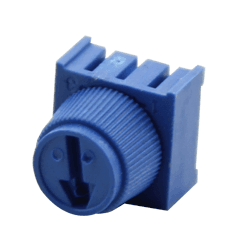
Thermistors are special resistors whose resistance will be changed with the temperature around it. They provide very useful and convenient way to sense the temperature difference.
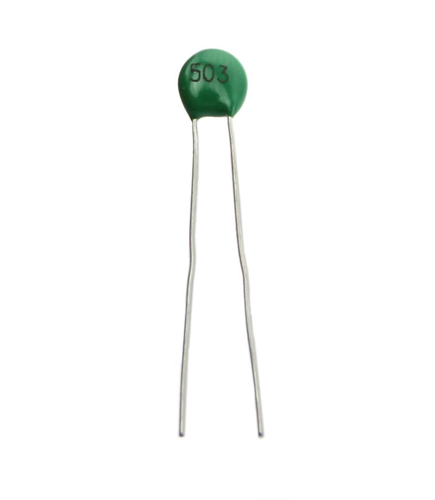
LDR will change the resistance when the intensity of light falling on them changes. They are also called photocell. It offers maximum resistance when there is no light falling on it and gives minimum resistance when exposed to bright light. It is made up of photo sensitive material like Cadmium Sulphide and can be connected to the circuit. It can be used as a light sensing element.
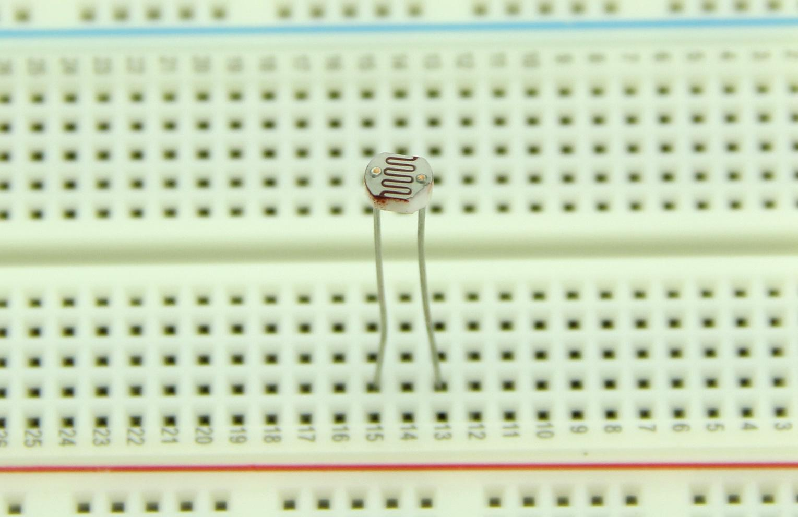
LEDs emit will light up when it is forward biased. They are encapsulated in a transparent casing and come in various colors like red, green and blue. LEDs are made of gallium arsenide phosphide, and by altering the proportions of arsenic and phosphorus, different colors can be obtained. Monocolor LEDs have two leads Anode( +ve ) and Cathode (-ve). Tricolor LEDs have 4 Leads - one anode and 3 cathodes for each color.The LEDs can be used in display boards.
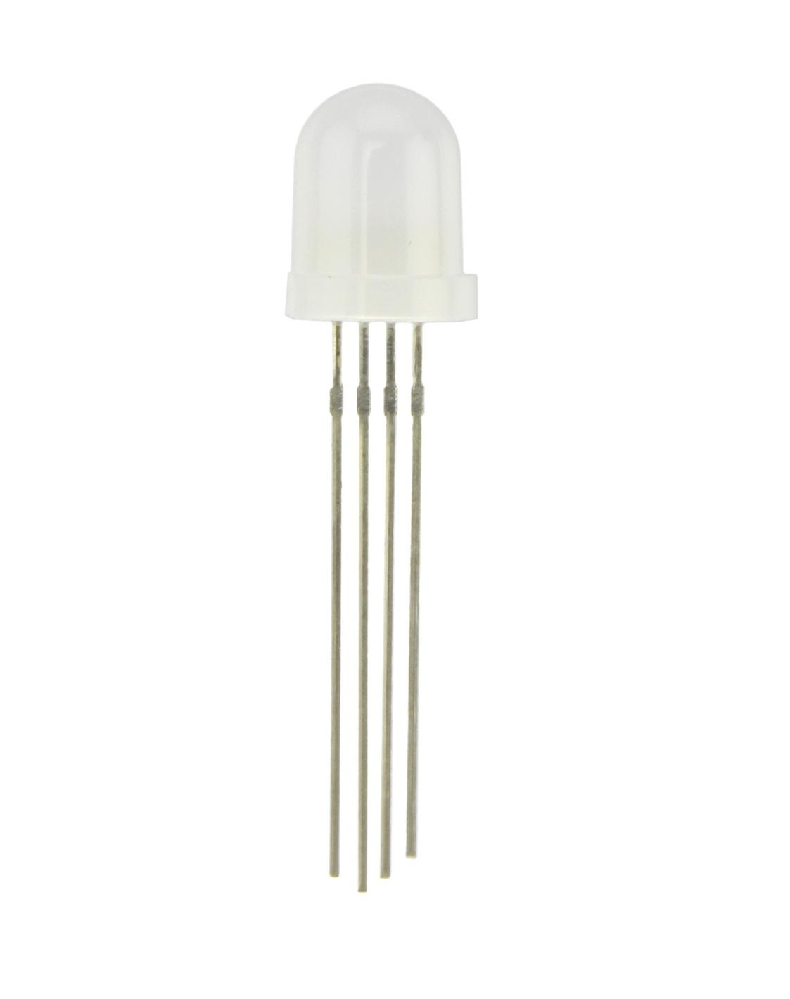
The switches are used to close or open the circuit. The switches supplied with Basic kit have two types - Push button switch and Slide Switch.
The circuit will be closed as long as you press the push button switch.
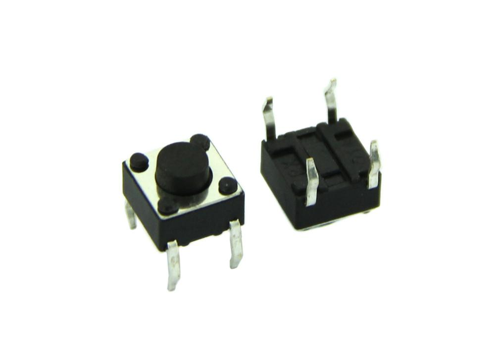
Slide switch is a simple two positions switch. It can be used to open or close a circuit by setting it to appropriate position.
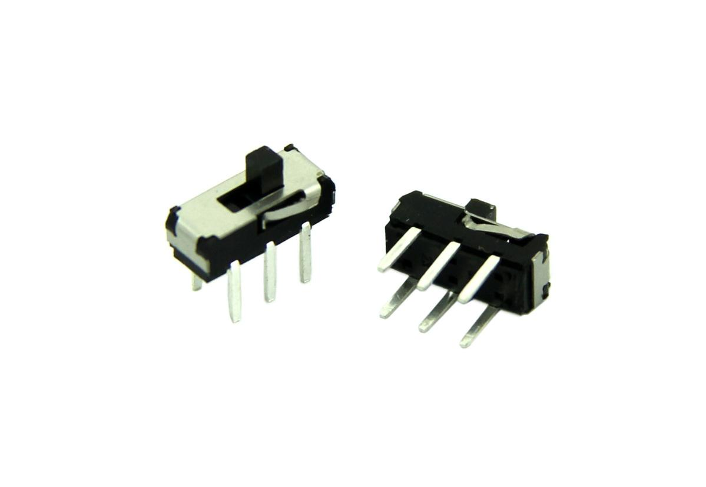
Tilt switch contains two terminals which are connected to the circuit , it closesthe circuit when it is tilted horizontally while opensthe circuit when tilted vertically.
Capacitors are used to store electric charge. They are classified into two different types: Electrolytic and Ceramic disc Capacitor. Capacitors are expressed in terms of micro Farads (uF).
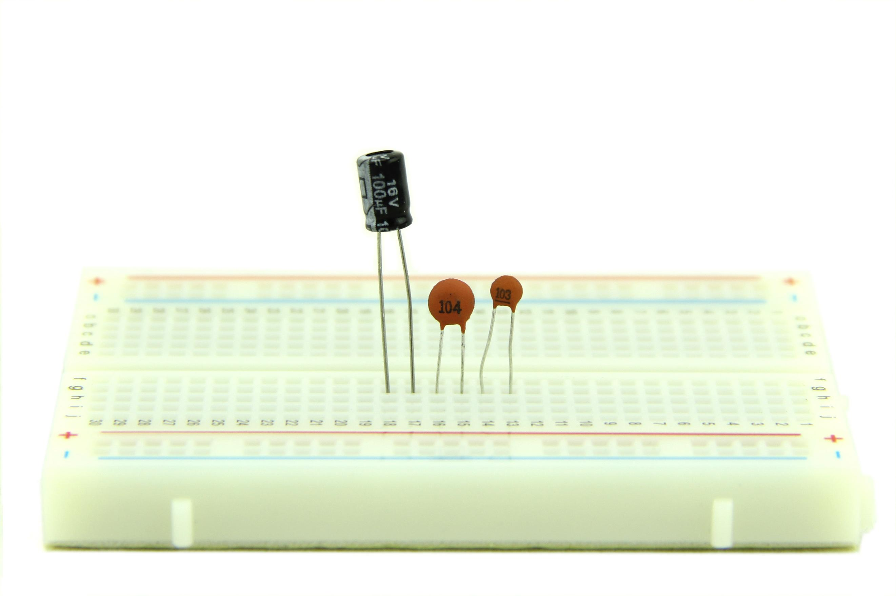
Capacitors can be connected in two types of arrangement in a circuit as shown below.
The total equivalent capacitance, when two or more capacitors are connected in series with each other, is equal to the sum of the reciprocal of individual capacitance value.
The total equivalent capacitance, when two or more capacitors connected in parallel, is equal to the sum of the individual capacitance.
Electrolytic Capacitors normally have small volume and large volume of capacitance. They are classified into polarized and non-polarized electrolytic capacitors. Metals like aluminum, tantalum , vanadium and bismuth are used to form anode and cathode foils.
The Ceramic Capacitors use ceramic dielectric with thin metal films as electrodes bonded to the ceramic. In the Disc type, capacitor silver is fixed on to both sides of ceramic to form conductor plates. The disc capacitors are used only for small value of capacitance.
A buzzer is an audio signaling device, which may be mechanical, electromechanical, or Piezoelectric. It produces various audio signal based on the oscillation of the material used in it. They are commonly used in alarms and timers.
Connect the long pin to the positive voltage, and the short pin to ground.
The buzzer can be connected to digital outputs, and will emit a tone when the output is high. Alternatively, it can be connected to an analog pulse-width modulation output to generate various tones and effects.
See buzzer information at the Grove Starter Kit for a sample.
A diode is a semi conducting material that conducts current only in one direction. It starts conducting only after the supply voltage is greater than the barrier potential. It acts like a closed switch in forward biased condition and acts like an open switch when it is reverse biased. The diodes are classified based on the semiconducting material and can be used to fabricate,such as PN Junction diode,zener diode,light emitting diode etc.
Applying voltage to a diode is called biasing a diode.The diode gets forward biased when a positive supply voltage is applied across the terminals and starts conducting above 0.7v for a silicon diode and 0.3v for a germanium diode.When a negative voltage is applied across the terminals of a diode, it is said to be reverse biased. The diode gets damaged when the reverse biasing voltage exceeds breakdown voltage.
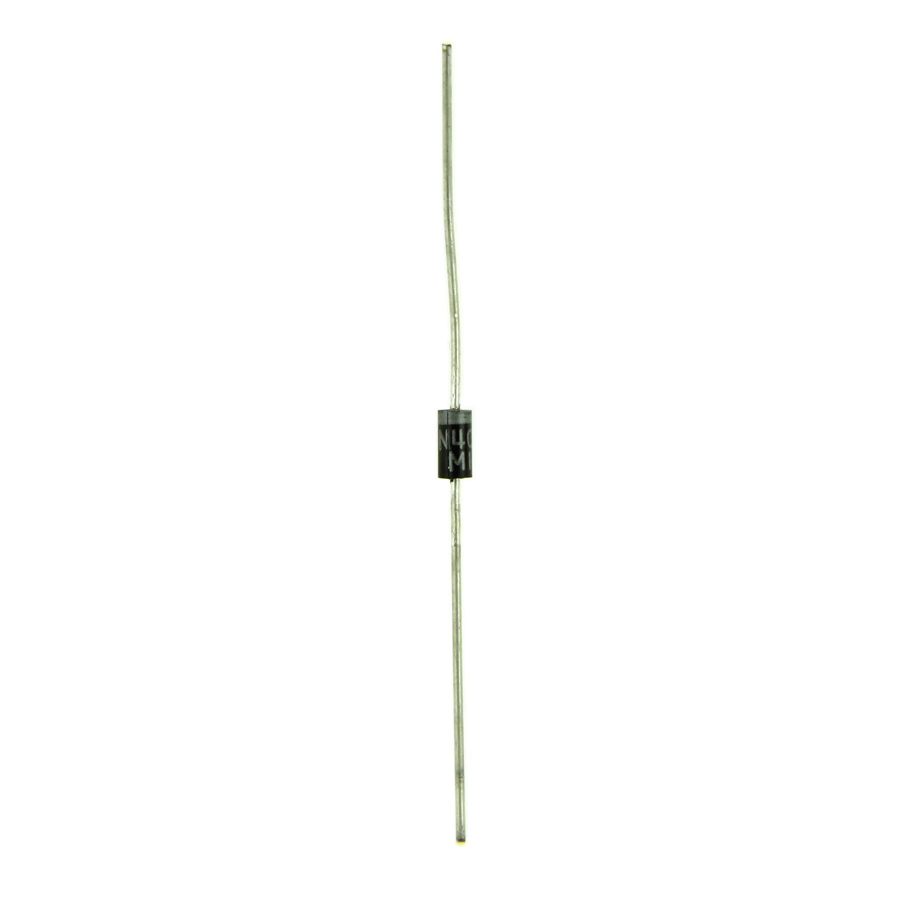
Servos are DC motors with gearing and feedback system.They are used in driving mechanism of robots.
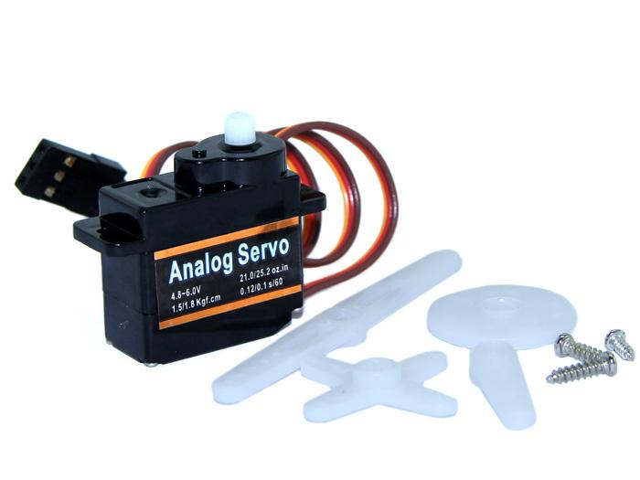
Compile and upload the following sketch:
//Blink a LED connected to Digital Pin 8 via a 330 Ohm resitors. void setup() { pinMode(8, OUTPUT); // Initialize Arduino Digital Pin 8 as output } void loop() { digitalWrite(8, HIGH); // Switch On LED delay(500); // Wait for half a second digitalWrite(8, LOW); // Switch Off LED delay(500); // Wait for half a second }
Compile and upload the following sketch:
//Running LED display: Three LEDs connected to Digital Pin 9, 10 and 11. void setup() { pinMode(9, OUTPUT); // Initialize Arduino Digital Pins 9 as output pinMode(10, OUTPUT); // Initialize Arduino Digital Pins 10 as output pinMode(11, OUTPUT); // Initialize Arduino Digital Pins 11 as output } void loop() { digitalWrite(9, LOW); digitalWrite(10, LOW); digitalWrite(11, HIGH); delay(250); // Wait for quarter of a second digitalWrite(9, LOW); digitalWrite(10, HIGH); digitalWrite(11, LOW); delay(250); // Wait for quarter of a second digitalWrite(9, HIGH); digitalWrite(10, LOW); digitalWrite(11, LOW); delay(250); // Wait for quarter of a second }
Compile and upload the following sketch:
//Pushbutton switch demo: LED is connected to digital pin 8 and Pushbutton is connected to digital pin 12. //The LED glows when the button is pressed. char inputButtonState; void setup() { pinMode(8, OUTPUT); // Initialize Arduino Digital Pins 8 as output for connecting LED pinMode(12,INPUT); // Initialize Arduino Digital Pins 12 as input for connecting Pushbutton } void loop() { inputButtonState = digitalRead(12); //Read the Pushbutton state. if (inputButtonState == HIGH) { digitalWrite(8, HIGH); //Switch on LED } else { digitalWrite(8, LOW); //Switch off LED } }
The above does demonstrate how to send a signal to the Arduino. In fact, you can achieve the same goal without the Arduino. Just press the button to close the circuit, then, let's flip the HIGH/LOW values as follows:
void loop() { inputButtonState = digitalRead(12); //Read the Pushbutton state. if (inputButtonState == HIGH) { digitalWrite(8, LOW); //Switch on LED } else { digitalWrite(8, HIGH); //Switch off LED }
The LED now lights with the circuit open and switches off with the circuit closed.
Connect LED annode to digital pin 5 (instead of 5V). Compile and Upload the following sketch:
//Varying the brightness of the LED using a Pot int value=0; int mval; void setup() { pinMode(5, OUTPUT); } void loop() { value=analogRead(A1); //read analog value from input A1 // PWM output given to the LED mval = map(value, 0, 1023, 0, 100); analogWrite(5,mval); }
RGB LED supplied with the basic kit is common anode type. The longest lead is anode. Other three leads are cathodes for Red, Green and Blue respectively.
Compile and upload the following sketch:
void setup() { } void loop() { for(int b = 0 ; b <= 255; b=b+5) { for(int g = 0 ; g <= 255; g=g+5) { for(int r= 0 ; r <= 255; r=r+5) { analogWrite(9, b); analogWrite(10, g); analogWrite(11, r); delay(10); } } } }
Compile and upload the following sketch:
#define NOTE_D0 98 #define NOTE_D1 294 #define NOTE_D2 330 #define NOTE_D3 350 #define NOTE_D4 393 #define NOTE_D5 441 #define NOTE_D6 495 #define NOTE_D7 556 #define NOTE_DL1 147 #define NOTE_DL2 165 #define NOTE_DL3 175 #define NOTE_DL4 196 #define NOTE_DL5 221 #define NOTE_DL6 248 #define NOTE_DL7 278 #define NOTE_DH1 589 #define NOTE_DH2 661 #define NOTE_DH3 700 #define NOTE_DH4 786 #define NOTE_DH5 882 #define NOTE_DH6 990 #define NOTE_DH7 112 #define WHOLE 1 #define HALF 0.5 #define QUARTER 0.25 #define EIGHTH 0.125 #define SIXTEENTH 0.625 // notes in the melody: int tune[] = { NOTE_D0,NOTE_D1,NOTE_D2,NOTE_D3,NOTE_D4,NOTE_D5,NOTE_D6,NOTE_D7, NOTE_DL1,NOTE_DL2,NOTE_DL3,NOTE_DL4,NOTE_DL5,NOTE_DL6,NOTE_DL7, NOTE_DH1,NOTE_DH2,NOTE_DH3,NOTE_DH4,NOTE_DH5,NOTE_DH6,NOTE_DH7, }; /* note durations: 1 = one note*/ float duration[]= {1,1,1,1,1,1,1,1, 1,1,1,1,1,1,1,1,1,1,1,1,1,1,}; int length; int tonePin=11; // buzzer pin void setup() { Serial.begin(9600); pinMode(tonePin,OUTPUT); // initialize the digital pin as an output length = sizeof(tune)/sizeof(tune[0]); } void loop() { for(int x=1;x<length;x++) {tone(tonePin,tune[x]); delay(400*duration[(x%100)]); // to distinguish the notes, set a minimum time between them. noTone(tonePin); // stop the tone playing: } }
Compile and Upload the following sketch:
// Controlling a servo position using a potentiometer (variable resistor) // by Michal Rinott <http://people.interaction-ivrea.it/m.rinott> #include <Servo.h> Servo myservo; // create servo object to control a servo int potpin = 1; // analog pin used to connect the potentiometer int val; // variable to read the value from the analog pin void setup() { myservo.attach(5); // attaches the servo on pin 5 to the servo object Serial.begin(19200); // some servos doesn't work without Serial } void loop() { val = analogRead(potpin); // reads the value of the potentiometer (value between 0 and 1023) val = map(val, 0, 1023, 0, 179); // scale it to use it with the servo (value between 0 and 180) myservo.write(val); // sets the servo position according to the scaled value delay(15); // waits for the servo to get there }
If you have questions or other better design ideas, you can go to our forum or wish to discuss.
| Revision | Descriptions | Release |
|---|---|---|
| v1.0 | Initial public release | Feb 23, 2011 |
Click here to buy Arduino Sidekick Basic Kit: http://www.seeedstudio.com/depot/arduino-sidekick-basic-kit-p-775.html?cPath=138.
It's a pity that we don't have any demo about Arduino Sidekick Basic Kit in the Recipe yet.
Post your awesome project about Arduino Sidekick Basic Kit to win $100 Coupon! Please feel free to contact us: recipe@seeed.cc
Here we introduce one project about Arduino. It tells us how to choose the only Arduino for yourself.
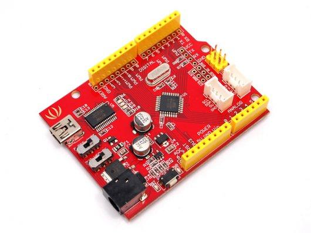
With this document, we can know that:
Seeeduino is also one of your choices.
I want to know about it.
More Awesome Projects by Seeeduino
Born with the spirit of making and sharing, that is what we believe makes a maker.
And only because of this, the open source community can be as prosperous as it is today.
It does not matter what you are and what you have made, hacker, maker, artist or engineers.
As long as you start sharing your works with others, you are being part of the open source community and you are making your contributions.
Now share your awesome projects with us on Recipe, and win a chance to become the Core User of Seeed.
Get more information about Core User please email to: recipe@seeed.cc
This documentation is licensed under the Creative Commons Attribution-ShareAlike License 3.0 Source code and libraries are licensed under GPL/LGPL, see source code files for details.
Arduino Video tutorial series by Jeremy Blum
Copyright (c) 2008-2016 Seeed Development Limited (www.seeedstudio.com / www.seeed.cc)